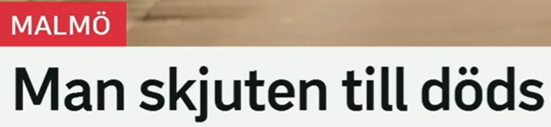
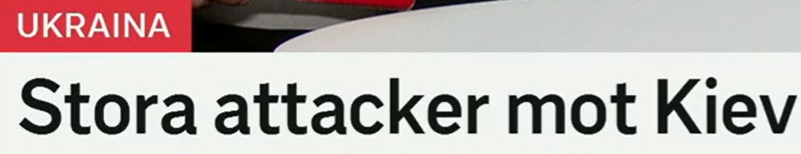
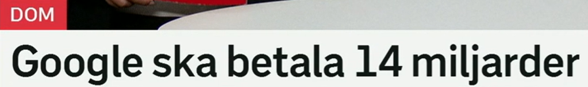
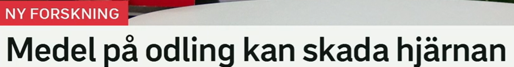
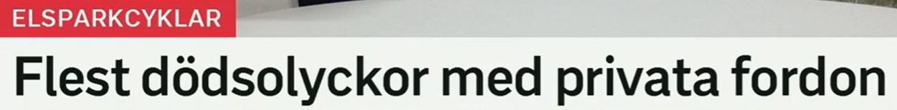

标题总览
Snipaste_2026-07-05_20-19-24.png
Snipaste_2026-07-05_20-19-36.png
Snipaste_2026-07-05_20-20-10.png
Snipaste_2026-07-05_20-20-46.png
Snipaste_2026-07-05_20-22-41.png

Man skjuten till döds
一名男子遭枪击身亡。
标题省略 har blivit；skjuten till döds 强调枪击造成死亡。截图未提供事件经过。
skjuten · 过去分词
原形：skjuta；skjuter–sköt–skjutit
变化：skjuten, skjutet, skjutna
搭配：bli skjuten, skjuten i benet
相关：en skjutning 枪击事件
till döds · 固定短语
含义：直至死亡、致死
搭配：skjuta/slå/frysa ihjäl；skjuten till döds
近义：dödligt, med dödlig utgång
场景：犯罪与事故新闻。
En man sköts till döds. 一名男子被枪杀。
Polisen utreder skjutningen. 警方正在调查枪击案。

Stora attacker mot Kiev
针对基辅的大规模袭击。
无动词名词短语；mot 标出攻击目标。标题没有说明袭击方式、时间或后果。
attack · en-名词
词形：en attack–attacken–attacker–attackerna
近义：angrepp, anfall
动词：attackera, angripa
搭配：genomföra en attack
mot · 介词
标题义：针对、朝向
搭配：attack mot, protest mot, skydd mot
其他义：倚靠；交换；接近某时段
反向：för 可表达“支持”。
Staden utsattes för en attack. 该城市遭到袭击。
De protesterar mot beslutet. 他们抗议该决定。

Google ska betala 14 miljarder
谷歌将支付 140 亿。
栏目 Dom 表示判决语境；标题没有写明币种、收款方或款项性质，不能从截图补足。
ska · 情态动词
过去式：skulle
标题义：将、须（安排或要求）
近义：kommer att；måste（语气更强）
结构：ska + 动词原形
miljard · en-名词
含义：十亿；14 miljarder = 140 亿
词形：en miljard–miljarden–miljarder
对比：miljon 百万；biljon 万亿
搭配：betala miljarder
Företaget ska betala böter. 公司须支付罚款。
Domen kan överklagas. 该判决可以上诉。

Medel på odling kan skada hjärnan
种植作物上使用的制剂可能损害大脑。
medel 含义宽泛；标题未指明制剂种类或研究结论细节，因此不将它擅自具体化为某一种化学品。
medel · ett-名词
词形：ett medel–medlet–medel–medlen
含义：制剂、手段、资金（依语境）
相关：bekämpningsmedel 防治制剂
搭配：ett medel mot något
kan skada
kan：可能、能够；过去式 kunde
skada：伤害；skadar–skadade–skadat
近义：kan påverka negativt
反义：skydda, vara ofarlig
Ämnet kan skada hjärnan. 该物质可能损害大脑。
Odlingen behandlas med ett särskilt medel. 作物种植区使用一种特殊制剂处理。

Flest dödsolyckor med privata fordon
私人车辆相关的致命事故数量最多。
栏目指向电动滑板车主题；标题只做数量比较，没有给出比较范围、数字或原因。
flest · 最高级
原级：många；比较级 fler；最高级 flest
用法：修饰可数名词复数
对比：mest 修饰不可数或程度
反义：färst（最少，较少用）
dödsolycka / fordon
dödsolycka：致命事故
fordon：ett fordon–fordonet–fordon–fordonen
privat：私人的；反义 offentlig
搭配：privat fordon, trafikolycka
Den gruppen hade flest olyckor. 该组事故最多。
Fordonet ägs av en privatperson. 该车辆归个人所有。
重点词表与标题表达
| 词汇 | 中文 | 高频搭配 | 近义 / 相关 |
|---|---|---|---|
| skjuten | 中枪的 | bli skjuten; skjuten till döds | skadad |
| skjutning | 枪击事件 | utreda en skjutning | våldsdåd |
| attack mot | 针对……的袭击 | genomföra en attack | angrepp mot |
| ska | 将、须 | ska betala | kommer att, måste |
| miljard | 十亿 | 14 miljarder kronor | miljon, biljon |
| medel | 制剂、手段、资金 | ett medel mot | ämne（依语境） |
| kan skada | 可能损害 | skada hjärnan/miljön | påverka negativt |
| flest | 最多（可数） | flest olyckor | mest（程度/不可数） |
| fordon | 车辆 | privata/motordrivna fordon | bil, farkost |
过去分词标题
Man skjuten … 省略 har blivit，新闻中常见 person gripen、väg avstängd。
情态强度
kan 表可能；ska 表安排或要求；måste 表必须。
数字不补单位
14 miljarder 的币种不在截图中，翻译时应保留这种信息边界。
最多
flest olyckor、flest personer；但说“花费最多”用 kostar mest。
自测
搭配填空
1. Polisen utreder ___.
2. Företaget ___ betala böter.
3. Ämnet kan ___ hjärnan.
答案
1. skjutningen 2. ska 3. skada
翻译练习
1. 针对该城市的袭击。
2. 这组事故最多。
3. 该车辆归个人所有。
参考答案
1. En attack mot staden.
2. Den gruppen hade flest olyckor.
3. Fordonet ägs av en privatperson.